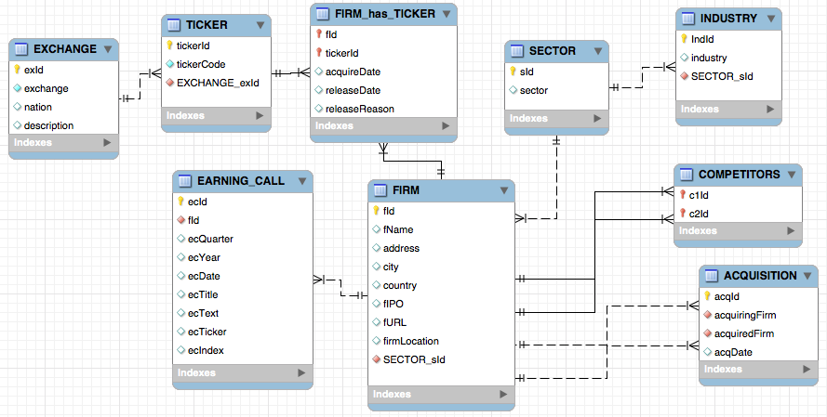

Database Model is the logical representation of the structure of the data.

Database Model Example
In general, there are two types of database models:
Conceptual Data Model
The logical representation of the structure of the data (conceptual metadata)
Using a specific modelling notation (e.g., ER diagramming, crow-foot notation, UML)
Hand-drawn crowfoot model
ER diagram
Figure 1
Implementable Data Model
Produced in specialized software
Ready to launch on a server
Conceptual design
Data dictionary
Implementable Model
Modelling is Designing
A database must model the real world
To model means:
To represent faithfully
Given the database design objectives
Within scope and under given constraints
Objective: Storing and retrieving data about the real world
Data modelling is a design technique for capturing data reality
The Relational Model
The relational model is a way of organizing data into tables (called relations).
The Relational Model represents data and their relationships through a collection of tables. Each table also known as a relation consists of rows and columns. Every column has a unique name and corresponds to a specific attribute, while each row contains a set of related data values representing a real-world entity or relationship.
The relational model represents how data is stored in Relational Databases. A relational database consists of a collection of tables each of which is assigned a unique name.
Relational Model
Relation or table: * Matrix of intersecting tuples and attributes + Tuples: Rows + Attributes: Columns
Single Entity
An entity is some thing in the environment. It can be a physical entity (e.g., student) or an abstraction (e.g., marriage). You can think of an entity as a class of objects (or phenomena). An instance is a particular occurrence of an entity.
No worries! It will get easier with the examples below üòÖ
Example 1: Cars
Entity: “Car” is an entity because it represents a general category of objects that share common characteristics, such as having wheels, an engine, and the ability to transport people.
Instance: A specific car, like a red 2015 Volkswagen Beetle with license plate ABC123, is an instance of the “Car” entity. It is a particular example with unique attributes.
Example 2: Trees
Entity: “Tree” is an entity because it represents a general type of object that has roots, a trunk, and leaves.
Instance: A specific tree in a forest, such as the 50-year-old oak tree standing near the river in Amazon Rainforest, is an instance of the “Tree” entity. It is a unique example of the general concept.
Let’s see how to apply this knowledge in Database modelling!
First, we need to draw an entity.
Remember, an entity is:
Some thing in the environment
A physical entity (e.g., student) or an abstraction (e.g., marriage)
An entity is a class (or entity set)
An instance is a particular occurrence of an entity
Note
An entity is represented by a rectangle in modelling notation
An entity
Second, let’s think about attributes.
An attribute is a discrete data element that describes an entity.
Attributes must be conceptually unique
Homonym: Same name is used to label different attributes
Synonym: Different names are used to describe the same attribute
Note
Attribute names must be unique within a data model
Attribute names should be meaningful
Attributes
There is one more step before we have our model ready. We need to add identifiers.
Every instance of an entity must be uniquely identified.
An identifier can be an attribute or collection of attributes.
An identifier can be created if there is no obvious attribute (surrogate).
Note
A leading asterisk denotes an identifier in our entity.
Identifier (*)
That’s it! You’ve created your first database model. It’s a simple one—just a single table. But soon, we’ll be designing much more complex databases, all built on these few basic steps.
Exercise
Create a data model for recording details of the herd of cows that you manage
Data Manipulation
Now that you understand how the relational model works, it’s time to interact with the database! We’ll be using a database called Hotel Reviews. For now, it has just one table—the one we designed earlier—but as we progress, it will grow in complexity.
Hotel Reviews database
In SQL, querying the database is like having a conversation with the server. You ask for specific data, and the server responds with exactly what you need. Let’s start with some simple queries and gradually build up to more advanced techniques.
Querying a Table
In SQL, the simplest way to retrieve data is by using SELECT * FROM tableName;. This command asks the database to return everything in the table. Think of it as saying, “Hey, server, show me (SELECT) all the data (*) in this table (FROM)!”
Of course, tableName is just a placeholder. We will have to replace it with the real name. In our case, the table is called brand.
Try it yourself with our brand table:
SELECT*FROM brand;
Note
Have you noticed the small detail at the end of line? Every query has to end with ;. It tells the server that your query ends here. Everything after this sign is a new code. This will be important when we run more than one query at a time.
Projection: Choosing Columns
Sometimes, you don’t need all the data—just specific columns.
You can request only what you need by listing column names:
SELECT brandName, brandChain FROM brand;
This is like asking, “Tell me just the brand name and chain, please.”
Restriction: Choosing Rows
If you only want certain rows, use WHERE to filter results.
Try yourself and report all brands owned by Hilton Worldwide.
SELECT*FROM brand WHERE brandChain ='Hilton Worldwide';
This is like telling the server, “Only show me brands owned by Hilton.”
You can choose any other lodging chain instead of ‘Hilton Worldwide’. For example, try with ‘Accor’ and see how the results change.
Warning
Hilton or Accor are values, not attributes. Unlike column names or table name, you always have to wrap text values with quotation marks ('...' or "...").
Tip
Following the same logic, you can exclude a value from the results. You have to replace = with != or <> (they both mean the same thing).
Try yourself and report all brands but Hilton Worldwide. Edit the query to try it with <> too.
SELECT*FROM brand WHERE brandChain <>'Hilton Worldwide';
Projection and Restriction Together
Combining both techniques, you can select specific columns and filter rows. List the brand name and segment of all brands owned by Hilton Worldwide:
SELECT brandName, brandSegment FROM brand WHERE brandChain ='Hilton Worldwide';
Now you’re asking, “Show me just the names and segments of Hilton brands.”
Primary Key Retrieval
A primary key uniquely identifies a row. If you query by it, you get at most one result:
SELECT*FROM brand WHERE brandID =10;
This is like saying, “Give me all details about the brand with ID 10.”
Important Notice that numerical values do not have to be wrapped with quotation marks.
Queries Without Primary Key
Without a primary key, multiple rows can be returned:
SELECT*FROM brand WHERE brandChain ='Accor';
The IN Operator
If you want to filter by multiple values, IN operator will come handy:
SELECT*FROM brand WHERE brandSegment IN ('Luxury', 'Economy');
This is the equivalent of saying, “Give me brands that are either Luxury or Economy.”
You could get the same results by using WHERE with OR:
SELECT*FROM brand WHERE brandSegment ='Luxury'OR brandSegment ='Economy';
Do you see how much more efficient it is with IN?
The NOT IN Operator
To exclude more than one value, use NOT IN:
SELECT*FROM brand WHERE brandName NOTIN ('Sofitel', 'Thalassa', 'Curio', 'Conrad');
This means, “Show me everything except these brands.”
Ordering Columns
The order of selected columns in your query defines how results appear. This just structures the results the way you prefer.
Compare these two queries
SELECT brandName, brandSegment FROM brand WHERE brandChain ='Accor';
SELECT brandSegment, brandName FROM brand WHERE brandChain ='Accor';
Ordering Rows
If you need to sort the results, you can use ORDER BY.
List all brands with rooms smaller than 350 square feet with largest first:
SELECT*FROM brand WHERE brandMinSqFt <350ORDERBY brandMinSqFt DESC;
This means, “Show me brands with rooms under 350 sqft, biggest first, and if sizes match, sort alphabetically.”
Tip
DESC means descending order (biggest first). If you need ascending order (smallest first), you can replace it with ASC or simply remove it (ascending order is default in SQL).
Note
Have you noticed that there are many brands with the same value? We can order results by two columns. If the results in the first column are identical, the second column will be used to sort them. Let’s add brandName to our ORDER BY clause.
List all brands with rooms smaller than 350 square feet with largest first. Where areas are identical, list brands in alphabetical order.
SELECT*FROM brand WHERE brandMinSqFt <350ORDERBY brandMinSqFt DESC, brandName;
Note
Notice that our results are ordered by brandMinSqFt in descending order (DESC), and alphabetically by brandName (you can add ASC after brandName to get the same results).
Tip
Last one more thing. Notice that we use < in this query. WHERE condition can take all the comparison operators: =, !=, <, >, <=, and >=.
Calculated Fields
SQL allows calculations directly in queries. Let’s say we want to convert square feet to square meters in the results (m² = f² / 10.764).
SELECT brandName, brandMinSqFt /10.764FROM brand;
Renaming Output Fields
The column name for our calculated field in the results above doesn’t look nice. To make results clearer, use AS to rename calculated fields (or any other column in your query).
Get minimum room area in square meters for each brand. Rename the output
SELECT brandName, brandMinSqFt /10.764AS brandSqMt FROM brand;
Now the result column will be labeled brandSqMt instead of an anonymous calculation. This new name is called alias.
Eliminating Duplicates
The DISTINCT keyword in SQL is used to eliminate duplicate rows from query results, ensuring that only unique values are displayed. This is particularly useful when reporting different possible values for a specific column, such as brand segments.
Run this query first. Then, modify it to retrieve a list of all unique brand segments without repetition.
SELECTDISTINCT brandSegment FROM brand;
Extra practice cell
That‚Äôs it for now! üéâ
Even if it seems like just a little, learning this is already a great achievement!
Remember, SQL is like having a conversation in English with the database:
“Show me everything” → SELECT * FROM table;
“Give me only what I need” → SELECT column FROM table;
“Filter the results” → WHERE = condition
“Sort them” → ORDER BY column
With these basics, you’re already on your way to mastering SQL!
Images and GIFs Disclaimer: Some of the images and GIFs used on this website are not owned by me. They are used for educational and illustrative purposes only. All rights belong to their respective owners. If you believe any content violates copyright, please contact me for prompt removal.


{kind=link}
{kind=link}
{kind=link}
{kind=link}
{kind=link}
{kind=link}